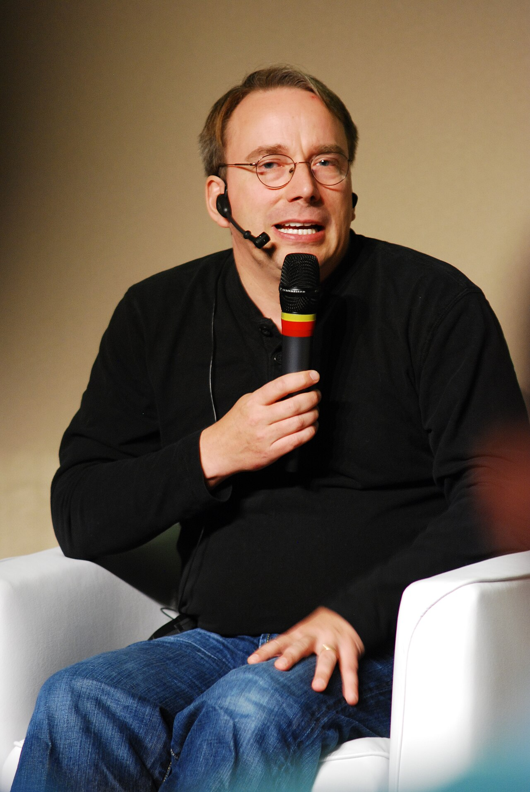

Opening hours
Always open. The collection has been on display continuously since 25 August 1991, and new exhibits arrive roughly every nine weeks.
The Linus Torvalds Museum · Est. 1991
Creator of Linux · Inventor of Git · Open-source pragmatist
In 1991 a 21-year-old student posted a message about a “hobby” operating system. That hobby became Linux — the kernel inside Android phones, the world’s fastest supercomputers, and most of the internet. Years later he built Git in a matter of days. This museum tells the story of the programmer who gave it all away.
linus@kernel:~$
uname -sr
Linux 6.12.0
linus@kernel:~$
git log --oneline -1
a1b2c3d Merge tag 'v6.12'
linus@kernel:~$
cat mission.txt
"Talk is cheap. Show me the
code."
linus@kernel:~$
git status
working tree clean
linus@kernel:~$
front desk
Every museum needs a front desk. Here is everything you need to know before you start wandering the halls.
Always open. The collection has been on display continuously since 25 August 1991, and new exhibits arrive roughly every nine weeks.
git.kernel.org — or anywhere with an internet connection. Over a third of the world’s web servers run on this collection.
Free, forever. Licensed under the GPL, the exhibits can be copied, studied, and improved by anyone. That was the whole point.
This page is the tour. Scroll through the timeline, peek into the halls, search the archives, and read the guestbook quotes below.
whoami
Linus Benedict Torvalds was born in Helsinki, Finland, on 28 December 1969, into a Swedish-speaking Finnish family of journalists and academics. Named after Nobel laureate Linus Pauling, he programmed on a Commodore VIC-20 from the age of eleven before studying computer science at the University of Helsinki.
In 1991 he began writing a free kernel for his own 386 PC, inspired by Minix and frustrated by the licensing of existing systems. He shared it openly, invited others to help, and released it under the GNU General Public License. That decision turned a personal project into the largest collaborative software effort in history.
Fourteen years later, when the kernel team lost access to its version-control tool, Linus wrote Git — now the standard way the world tracks source code. He still leads Linux kernel development, reviewing patches and merging releases from his home near Portland, Oregon. He is also the author of Subsurface, an open-source dive computer log he built for his own scuba hobby.

by the numbers
One hobby kernel grew into the most widely deployed software project in history. These figures count what the museum holds today.
portrait hall
Select any frame to view it full size. All photographs are freely licensed and courtesy of Wikimedia Commons.
git log --reverse
From a borrowed PC in Helsinki to the maintainer’s chair of the world’s most important open-source project — one milestone at a time. Every card below is searchable in the archives.
Linus Benedict Torvalds is born on 28 December in Helsinki, Finland, into a Swedish-speaking family of journalists and academics. He is named after Nobel laureate Linus Pauling.
An eleven-year-old Linus discovers a Commodore VIC-20 bought by his grandfather. He teaches himself BASIC, then writes machine code directly for the 6502 processor.
He buys a Sinclair QL and modifies its operating system so heavily that he writes his own assembler and games — including a Pac-Man clone called Cool Man — because so little software existed for it.
He enrols to study computer science, where he is introduced to Unix and the Minix teaching operating system that will shape everything he builds next.
His studies pause for mandatory military service: eleven months of officer training with the Finnish Navy’s Nyland Brigade. He emerges as a second lieutenant and artillery observer.
In January he buys a 386 PC clone. Frustrated by MINIX’s licence, he writes his own kernel. On 25 August he posts to comp.os.minix: a free operating system “just a hobby, won’t be big and professional like GNU.”
About 10,239 lines go up on the FUNET FTP server. Torvalds wanted to call it “Freax”, but the server’s admin named the directory “linux” — and the name stuck. The first licence even forbade selling it.
Linus relicenses the kernel under the GNU General Public License, legally guaranteeing that it stays free and open — the decision that made Linux unstoppable.
The first production-ready kernel ships in March with roughly 176,250 lines of code and a growing community of contributors.
Larry Ewing draws the penguin mascot with GIMP, inspired by the penguin that reportedly bit Linus at a Canberra zoo. That year he also visits Transmeta in California and joins the company.
Linus moves to the United States to work full-time at Transmeta on low-power processor technology, while still guiding Linux in his spare cycles.
He receives the EFF Pioneer Award, is named to MIT Technology Review’s TR100 of top young innovators, and jokes to a crowd: “My name is Linus Torvalds and I am your god.”
Red Hat and VA Linux give him stock options in gratitude. Both companies go public that year, and Torvalds’s shares briefly make him a multimillionaire — a fortune he never chased.
Steve Jobs personally invites him to work on macOS. Linus declines — partly because he felt the Mach kernel was too different from Linux, and partly because Linux came first.
He leaves Transmeta to join the Open Source Development Labs — backed by IBM, HP, Intel, AMD, Red Hat and others — and can finally focus entirely on Linux.
His family settles in Dunthorpe, Oregon, close to the OSDL headquarters in Beaverton — and close to the diving spots that will inspire his next project.
After the kernel team loses free use of BitKeeper, Linus writes a fast, distributed version-control system in days rather than months. Linux adopts it within weeks; the world follows.
OSDL merges with the Free Standards Group to become the Linux Foundation. Torvalds remains the ultimate authority on what enters the kernel.
Frustrated by existing dive-log software, Linus starts Subsurface with developer Dirk Hohndel — an open-source log that reads dive computers and syncs across devices.
He shares the €1 million award for creating Linux, is inducted into the Internet Hall of Fame, and hands the Subsurface maintainer role to dive buddy Dirk Hohndel.
The IEEE Computer Society names him its 2014 Computer Pioneer — recognition that arrives, by design, more than fifteen years after the achievement it honours.
He wins the IEEE Masaru Ibuka Award — then, confronted by his community, publicly apologises for years of abrasive emails, steps back briefly, and returns with a real code of conduct.
The Carnegie Corporation honours him as a Great Immigrant — a reminder that the man behind Linux originally came to the United States as a young engineer, not a celebrity.
Linux 6.12 brings PREEMPT_RT support into the mainline kernel after nearly two decades of community work — opening the door to deterministic timing for cars, factories, and robotics.
Kernel 6.18 ships with a record 2,134 contributors and 13,710 commits. The codebase passes 40 million lines — forty times larger than the hobby project Torvalds posted in 1991.
Linus continues to review patches, resolve merges, and ship a new kernel release roughly every nine weeks — the hobby that never ended.
ls ~/projects
Linus is not just famous for one thing. The kernel, the version control system, and a hobby dive-log app each show the same instinct: solve the real problem, keep it simple, and share it.
Operating system kernel
Linux started as a personal kernel for a 386 PC and grew into the largest collaborative software project on Earth. It powers Android phones, web servers, embedded devices, stock exchanges, and every machine in the TOP500 supercomputer list.
Linus does not write most of the code. His role is architecture, judgement, and integration: reviewing thousands of patches and deciding what enters the next release. That merge-led model is a template for large open-source projects everywhere.
kernel.orgDistributed version control
In 2005 the kernel community lost free access to BitKeeper. Linus wanted a tool that was fast, distributed, and trustworthy, so he wrote Git — and the first usable version appeared in days rather than months.
Git stores snapshots as a content-addressed graph, making branches cheap and history verifiable. It is now the default for open-source and commercial software alike, and the language of collaboration in modern development.
git-scm.comOpen-source dive log
Subsurface began in 2011 because Linus wanted a better way to log his own dives. It reads data from dive computers, tracks depth profiles and gas mixes, and syncs logs across desktop and mobile devices.
It is a smaller, more personal project than Linux or Git, but it shows the same pattern: find a real annoyance, build the tool you need, then release it for everyone else.
subsurface-divelog.orgexhibit: the maintainer
Ask anyone who has spent time on the linux-kernel mailing list and they will have a story. Linus reviews patches the way a museum conservator restores a painting — with total attention to detail and zero patience for sloppy work. His emails are famous for their directness, which for decades he defended as simply efficient.
In 2018 the community confronted him directly about years of harsh, sometimes personal attacks. His response became one of the most remarkable public apologies in open source: he admitted his behaviour was “unprofessional and uncalled for,” stepped back, sought help, and returned with a code of conduct he had once dismissed. He told the BBC he would “never be cuddly but can be more polite.”
The museum displays him honestly: a genius who made software better by being difficult, who learned — imperfectly, publicly — that the people matter as much as the patches.
“My flippant attacks in emails have been both unprofessional and uncalled for. I know now this was not OK and I am truly sorry.”
Linus Torvalds — linux-kernel mailing list, 16 September 2018
exhibit: daily life
Museums preserve objects; this exhibit preserves routines. These are the habits, tools, and rituals that built Linux — drawn from Linus’s own interviews and talks.
He works alone at home, “often in my bathrobe,” he told TED. His computer must be completely silent — loud enough that he can hear the cat purring on his lap, not the fans. The office walls are painted light green, the calming colour used in mental institutions, and the walking desk in the famous photo is one he no longer uses.
Kernel development happens over email. Thousands of patches arrive on the linux-kernel mailing list; Linus reads, judges, and merges them into a release every nine to ten weeks like clockwork. Asked what he was doing in a recent interview: “this week I’m doing a lot of merging because the merge window.”
Famously pragmatic: he uses whatever works, even proprietary software, because open source is a means to an end — not a religion. He ran Fedora for years, ditched GNOME 3 in frustration, and still lives his digital life on Linux.
He dives — and logs every dive in Subsurface, the app he co-wrote for exactly that purpose. He builds guitar pedals and electronics for fun. He is married to Tove, has three daughters, and lives in Dunthorpe, Oregon, with the cat.
I work alone in my house, often in my bathrobe. What you can’t see is the computer here — it doesn’t have to be big and powerful, it really has to be completely silent. I want to hear the cat purring, not the sound of the fans.
cat philosophy.md
Linus writes little about theory. His philosophy is visible in how he works: ship useful code, keep interfaces stable, and never lose sight of the fun.
“Talk is cheap. Show me the code.” Arguments are settled with patches, tests, and measurable results — not with status or volume.
The best code removes special cases instead of adding more branches. Simplicity is not an aesthetic extra; it is how complex systems stay maintainable.
A kernel upgrade should not break existing programs. Backwards compatibility is a promise Linux keeps, even when the technical shortcut would be easier.
Small, frequent iterations expose problems while they are cheap to fix. The kernel’s merge windows and regular releases are built on that rhythm.
Sharing source code lets strangers inspect, improve, and reuse work. The result is software that outlives any single company or contributor.
Linus titled his autobiography Just for Fun for a reason. Curiosity and enjoyment, not fame, started Linux — and still sustain it.
screening room
Every museum has a screening room. These are the definitive interviews and keynotes — press play and they run right here on the page, no need to visit YouTube.
TED · 2016 · ~18 min
Chris Anderson sits down with Linus for the definitive TED conversation — from his silent home office to why open source works.
Aalto University · 2012 · ~64 min
A full-length interview and audience Q&A at Aalto University — career, community, and the state of Linux.
Computer History Museum · 2001 · ~85 min
Recorded in 2001, Linus tells the whole story himself: Helsinki, MINIX, the 1991 announcement, and the early years.
Google Open Source · 2010 · ~12 min
The lightest watch in the museum: two old-timers reminisce about the Sinclair QL that started it all.
Linux Foundation · keynote · ~1 hr
The recurring keynote format: dive buddy Dirk Hohndel asks the questions Linus actually answers — releases, community, and what keeps him up at night.
Open Source Summit · Vienna · recent
A recent long-form interview on what he actually works on today — merging, maintainers, and his take on AI-assisted coding.
grep -r "insight" quotes/
Every museum has a guestbook. This one is written entirely by its subject — filterable below via the archive search.
I’m doing a (free) operating system (just a hobby, won’t be big and professional like GNU) for 386(486) AT clones.
Talk is cheap. Show me the code.
Software is like sex; it’s better when it’s free.
All operating systems suck, but Linux just sucks less.
I have an ego the size of a small planet.
Given enough eyeballs, all bugs are shallow.
Those that can, do. Those that can’t, complain.
Don’t hurry your code. Make sure it works well and is well designed. Don’t worry about timing.
If you think your users are idiots, only idiots will use it.
Most good programmers do programming not because they expect to get paid or get adulation by the public, but because it is fun to program.
Backups are for wimps. Real men upload their data to an FTP site and have everyone else mirror it.
Excusing bad programming is a shooting offence, no matter what the circumstances.
My name is Linus Torvalds and I am your god.
Nobody should start to undertake a large project. You start with a small trivial project, and you should never expect it to get large.
Developers have the attention spans of slightly moronic woodland creatures.
My flippant attacks in emails have been both unprofessional and uncalled for. I know now this was not OK and I am truly sorry.
ls ~/trophies
Prizes are nice, but they arrive late by design — the IEEE waits fifteen years precisely so it can honour work that has stood the test of time.
From the Electronic Frontier Foundation, for advancing digital freedom.
Stockholm University, Sweden.
The British Computer Society’s highest honour for computing.
For social contribution through technology.
Computer History Museum fellowship, NEC’s C&C Prize, and the Takreda Award.
€1 million from the Technology Academy of Finland, shared with Shinya Yamanaka.
Inducted at the Internet Society’s Global INET conference in Geneva.
“For pioneering development of the Linux kernel using the open-source approach.”
“For his leadership of the development and proliferation of Linux.”
The Carnegie Corporation of New York’s honour for immigrant achievement.
Member of the Swedish Royal Academy of Engineering Sciences (IVA).
exhibit: become a contributor
There is no application form and Linus does not hire maintainers. Trust is earned one reviewed patch at a time — here is the actual path people walk.
Compile the kernel from source and read the documentation in
Documentation/process/. Break things on
purpose. One afternoon of compiling teaches more than a
month of reading — and it is how every maintainer
started.
Mainline patches are sent
by email to the mailing lists —
GitHub PRs do not count. Plain text only, one logical change
per patch, a Signed-off-by trailer, and run
scripts/checkpatch.pl before sending. Linus
rejects patches that fail it.
The MAINTAINERS file maps every kernel area to
its maintainers — they, not Linus, are your first
reviewers. Choose an area tied to hardware or a problem you
actually hit. Personal motivation produces the best patches.
New and rough drivers go into the staging tree first — it exists precisely for newcomers. Get reviewed, cleaned, and promoted out of staging over several releases.
Collect Reviewed-by: tags, answer review
feedback promptly and technically, and survive a few release
cycles. Thin skin is the most common reason promising
contributors disappear.
Subsystem maintainers invite co-maintainers for drivers and areas they trust. That invitation — not a résumé — is what “Linux maintainer” means.
The main event. Email workflow, strict style, longest road — and the highest impact. Every rule above applies here.
Difficulty: expert trailNormal GitHub pull requests work — the community is smaller and friendlier. A great second summit after the kernel.
Difficulty: moderate hikeThe easiest on-ramp in the museum: GitHub-hosted, actively maintained by Dirk Hohndel, and dive-log bugs are a genuinely good first contribution.
Difficulty: beginner-friendlyman linus
Quick answers to the questions visitors ask most about Linus, Linux, and Git.
Did you know? Linux is only the kernel. A complete operating system also needs libraries, tools, and a desktop — which is why distributions such as Debian, Fedora, and Ubuntu exist.
No. He wrote the first kernel and remains its most important maintainer, but Linux today contains contributions from thousands of developers working at companies, universities, and independently. Linus’s job is to review, judge, and merge their work.
Linus was reportedly bitten by a penguin at a zoo in Canberra in 1993 and found the idea of a slightly grumpy penguin funny. The mascot was named Tux and drawn by Larry Ewing in 1996 using GIMP.
In 2005 the kernel team lost free use of the BitKeeper version-control system. Linus needed something fast, distributed, and reliable, so he wrote Git himself. A working version was ready within days, and the kernel switched to it almost immediately.
Strictly speaking, Linux is the kernel — the core that talks to hardware. GNU provides many of the user-space tools and libraries a full system needs. Most “Linux” distributions combine both, which is why some people prefer the name GNU/Linux. The naming debate is decades old and unlikely to end soon.
It started as one — he has said many times he wrote it for himself, on hardware he owned, because he was tired of waiting for commercial systems to fix their licensing. The GPL licence and open invitation to contributors are what turned a personal project into a global one.
Since 2003 he has worked for the Linux Foundation, the non-profit consortium that supports kernel development. Before that he worked at Transmeta. He has said he never cared much about money — though his brief Red Hat and VA Linux stock options in 1999 were briefly worth around twenty million dollars.
He maintains the Linux kernel, reviews patches on the linux-kernel mailing list, and merges each release cycle. He is a fellow at the Linux Foundation and lives near Portland, Oregon. You can follow his public work on GitHub.
Yes. When he uploaded version 0.01 to the Finnish university FTP server in September 1991, he named it Freax — after the free, freak, and “x” that ends Unix. The server administrator, Ari Lemmke, named the directory “linux” instead, and the name stuck forever.